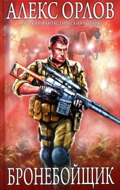

Ферлин и Джек вышли в дорогу затемно, когда солнце еще и не собиралось выглядывать из-за горизонта. Из продуктовых запасов у них был круг козьего сыра, несколько вареных картофелин и самодельный фильтр для воды. Немного, но путешествовать долго они не планировали.
До рассвета им предстояло пройти пустошь, к полудню добраться до глинистых холмов. Потом оставалось лишь перебраться на пустошь за холмами и по заросшим лесом дюнам выбраться к болотам.
Именно там, по словам Ферлина, была самая лучшая охота, и Джек ему верил, ведь Ферлин исходил все дальние пустоши и проточные болота. К тому же он был бывшим солдатом, имевшим ранения, что в глазах юного Джека только добавляло очков его компаньону.
Ну и потом, у Ферлина с собой было ружье, а какая же охота без оружия?
Вскоре после рассвета воздух начал быстро нагреваться, и к тому времени, когда путники добрались до холмов, пришлось сделать привал у подножия скалы, имевшей собственное имя — Тюльпан.
Она была очень высока, и на ее вершине любили сидеть и наблюдать за окрестностями каменные орлы, собиравшие на пустошах обильную жатву из ящериц, крыс и тритонов. Остатки их трапез в изобилии валялись вокруг — мелкие косточки, кусочки кожи, перепонки и даже несколько засохших, почти нетронутых ящериц.
Вся живность на пустошах была ядовита, причем настолько, что даже привычные к ней каменные орлы иногда отказывались от еды, если чувствовали, что в их организме слишком много яда.
В полдень тень от Тюльпана была коротка, но для двух путников ее хватало с избытком.
Джек сел на камень, снял сапоги и размотал портянки, чтобы просушились, а Ферлин прислонил ружье к скале, поставил рядом монтерскую сумку и с флягой в руках поднялся на холм метров на сорок, к скоплению скальных обломков. Там, на выжженном склоне, пробивалась зеленая травка, сбегавшая дорожкой к основанию холма, а под ней, скрываясь от солнца, спешил под гору небольшой ручей.
Напившись из ключа возле самых камней, Ферлин набрал полную флягу и спустился к Джеку.
— На, пей, — сказал он, отдавая флягу и садясь на камни, чтобы тоже просушить портянки.
— Жарко сегодня будет, — сказал Джек, делая глоток и возвращая фляжку.
— Жарко, — согласился Ферлин. — Но тут, за холмами, нас ждет прохладный ветерок до самых болот. Так что не запаримся.
— Ты патронов с собой много взял? — спросил Джек, поглядывая на замотанное в ветошь ружье.
— Пять штук, но и этого много. Я рассчитываю сделать только один выстрел — больше не понадобится.
Джек пожал плечами. Ферлину, конечно, виднее, ему много приходилось стрелять, а Джеку всего два раза. Один раз из пистолета Санифа, его бывшего школьного друга, а второй раз в прошлом году, когда ему дал стрельнуть из ружья Ферлин.
У Санифа они стреляли в кусок керамической плитки и оба раза не попали, зато Ферлин повел его на деревенскую пустошь, где из песка торчали ржавые остовы боевых машин. Все, что с них можно было снять, давно сняли, и над пустошью вздымались только голые корпуса, чем-то похожие на черепа ископаемых животных.
Когда была школа, Джек ходил в нее мимо деревни, где множество домов были сделаны из таких же стальных коробов, но еще больше стальных остовов было неподалеку на пустоши. Именно там Джек и пробовал стрелять из ружья.
На корпусе какого-то перевернутого бронетранспортера Ферлин нарисовал ракушкой круг размером с большой мяч, а потом они отошли метров на четыреста, Ферлин зарядил для Джека ружье, подставил для упора рогатину, и тот выстрелил.
В очерченный круг он, конечно, не попал, напутал что-то в шкале прицела, но пробоина в стальном корпусе получилась красивая — круглая и аккуратная.
«Вот, приятель, что делает хорошее ружье с пятисантиметровой сталью», — сказал тогда Ферлин, и Джек это запомнил.
Далее